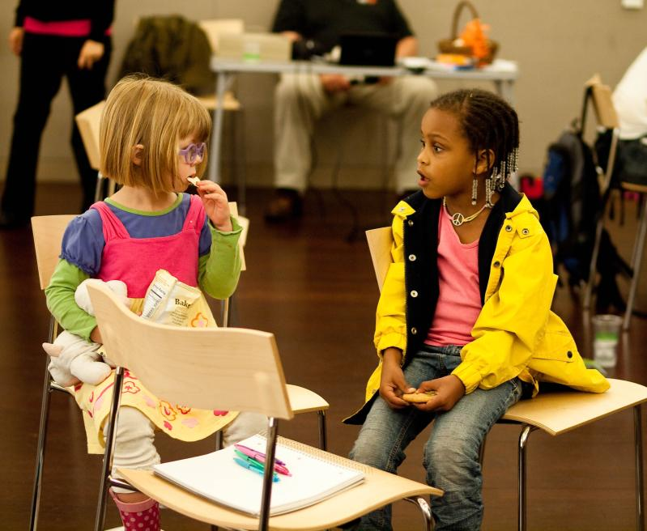

Diversity in the Tech WorldNov 1st
 Photo credit: Inkyhack / Foter / CC BY-NC
The lack of diversity in the tech industry's workforce has recently been a much talked about topic, with little actual results. From those taking the AP Computer Science exam, all the way to the board members of top tech giants, there is a distinct inequality in the number of women, and much less African-Americans and Latinos. For an industry leading in technology, innovation, and global commerce, lacking in diversity will only work against becoming more representative of the people whom it is serving. With an ever growing number of minorities domestically as well as the vast under-represented cultures around the world, the tech industry should aim to not only acknowledge and continue this important dialogue, but to take effective and impactful action to educate and incentivize hiring a diverse workforce.
Top tech companies have just recently claimed to recognize the lack of diversity and its seriousness. With most employees in these firms being White or Asian males, this problem persists at a deeper level within our education system. Despite an ever increasing number of women in sciences, computer science has experienced a drop in their percentage. Fewer female computer scientists isn't the only problem. Women are also leaving tech jobs more often than men. In these high pressure environments, women experience a higher attrition rate, citing the increasing pressures to outperform just to be considered as an equal, predatory behaviors, and in general an unwelcoming culture as some of the reasons they seek to leave.
African Americans made up of less than 2% of the population to pass the Advanced Placement computer science test last year. With such a low rate of blacks and hispanics engaged and interested in studying this field, there will be even fewer upon graduation and landing their first job. Despite getting past any possible racial biases, these minorities might still feel unwelcomed in working in such a non diverse workplace and can face social pressures.
With a more recent focus on gaining better diversity, it will take implementing several solutions as well as time to see results. There are nonprofit organizations such as Platform that seek to inspire a future of diversity and innovation. Companies can work with nonprofits to work on initiatives to bring and keep more women in the tech world. They can also work with our educational institutions to inspire a younger generation to learn and be more aware of the current state of the tech world. Getting our students to be more aware and interested in these opportunities might just inspire more to seek these jobs. Hiring in tech firms have also room for improvement here. Many of these companies traditionally hire from the same networks and the same universities. Reaching out to account for a potentially more broad pool of talent will also help to better alleviate the issue. Lastly, there also needs to be a shift in the culture and education in the tech firms to better recognize possible hidden biases to become more self aware and work to root out the issues from within. A subconscous bias that only ever slightly favors a man over a woman or white over black can have more dramatic effects across a large population and over a long period of time. These solutions are definitely not easy, as this issue is not something that can be fixed over time. However, acknowledging and acting upon these issues is a good place to start.